Network Operation Center Report
Overview kondisi jaringan dan highlight utama bulan Maret 2026
6 insiden major berhasil ditangani, termasuk perbaikan FO dan gangguan perangkat
Semua insiden major ditangani dengan resolusi penuh oleh tim NOC
Traffic backbone stabil di 3.08 Gbps (Core Router) dan 2.51 Gbps (Home)
Gangguan link backbone Cigudeg dan insiden power/radio di Kalurahan berhasil diatasi
Daftar gangguan prioritas tinggi bulan Maret 2026, beserta evaluasi perbandingan dari bulan sebelumnya
Tren insiden major mengalami penurunan dari 7 (Februari) menjadi 6 (Maret). Di Februari, masalah didominasi FO Cut jalur backbone akibat vandalisme/galian. Di Maret, insiden dipengaruhi cuaca ekstrim (sambaran petir POP Kalurahan) & kegagalan SFP/radio.
Problem: LINK LOSS DIDUGA AKIBAT GANGGUAN PADA JALUR KE BAWAH (DROP CORE)
Action: PENORMALAN KONEKSI (RESEATING / PERAPIHAN JALUR)
Tiket: SDN3236050326 | Area: POP KALURAHAN
Problem: SFP PON 2 OFF
Action: PENGGANTIAN SFP
Tiket: SDN3343160326 | Area: LINK CIGUDEG TO SERVER (JAVA)
Problem: FO CUT PARTIAL DI ±3KM DARI POP CIGUDEG (PORT 22 OTB TERPUTUS)
Action: PENYAMBUNGAN ULANG KABEL DI CLOSURE PERTIGAAN
Tiket: SDN3344170326 | Area: LINK BACKBONE SERVER TO POP CIGUDEG
Problem: DEVICE FAILURE (RADIO MIMOSA & RADIO LINK ERROR)
Action: PENGGANTIAN RADIO AP LHG DAN RADIO MIMOSA
Tiket: SDN3357200326 | Area: LINK RADIO POP KALURAHAN
Problem: KABEL MENGALAMI BENDING DI ±1.860M (ODP 5) MENYEBABKAN REDAMAN NAIK
Action: PERAPIHAN DAN PELURUSAN KABEL DI ODP 5
Tiket: SDN3366220326 | Area: PON 2, PON 3, PON 4 OLT HIOSO
Problem: POWER ISSUE (MCB TRIP DUE TO LIGHTNING)
Action: MCB RESET
Tiket: SDN3447290326 | Area: POP KALURAHAN
Grafik monitoring jaringan berbasis file harian dan bulanan
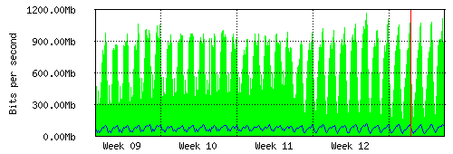
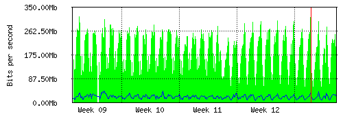
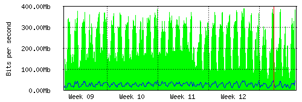
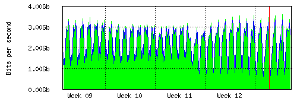
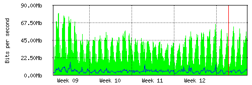
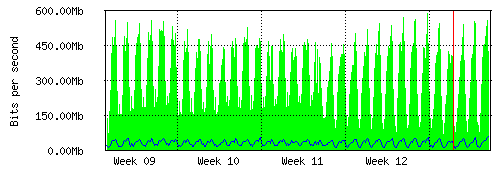
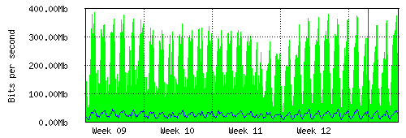
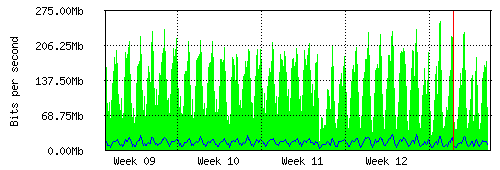
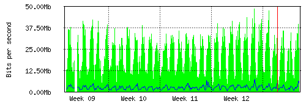
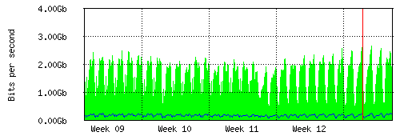
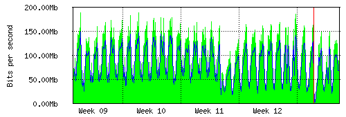
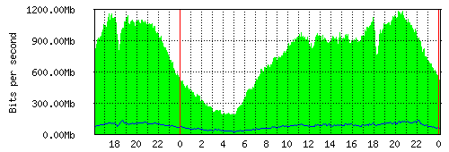
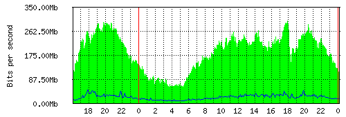
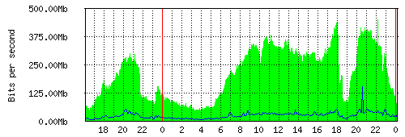
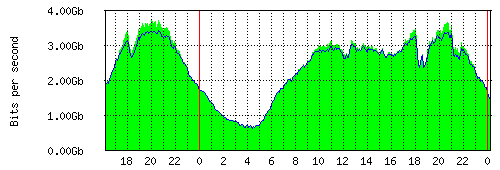
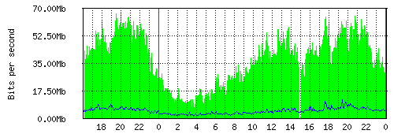
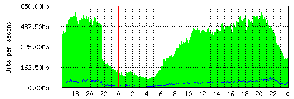
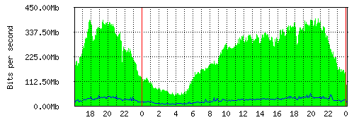
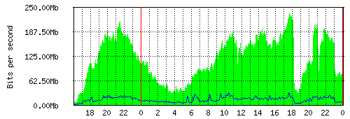
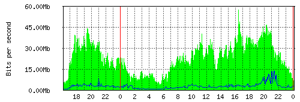
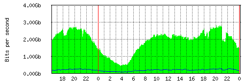
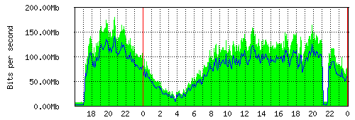
Data traffic bandwidth per site - Bulan Maret 2026
| Site | Kategori | Max In | Avg In | Current In | Max Out | Avg Out | Current Out |
|---|---|---|---|---|---|---|---|
| DISTRIBUSI PUBLIK (CORE ROUTER) | Core | 3.74 Gb | 2.45 Gb | 1.40 Gb | 3.44 Gb | 2.37 Gb | 1.39 Gb |
| TO OLT (SITE HOME) | Home | 2.81 Gb | 1.89 Gb | 1.13 Gb | 300.66 Mb | 175.50 Mb | 141.37 Mb |
| DESAINTER-1 (SITE HOTSPOT) | Hotspot | 1.19 Gb | 778.49 Mb | 477.91 Mb | 128.08 Mb | 74.48 Mb | 44.88 Mb |
| POP CIGUDEG (SITE HOTSPOT) | Hotspot | 607.32 Mb | 360.83 Mb | 214.57 Mb | 76.21 Mb | 31.93 Mb | 19.28 Mb |
| POP HAMBARO (SITE HOTSPOT) | Hotspot | 401.96 Mb | 244.10 Mb | 162.09 Mb | 54.65 Mb | 25.20 Mb | 14.00 Mb |
| DIST 400 (SITE HOTSPOT) | Hotspot | 452.00 Mb | 215.45 Mb | 187.40 Mb | 150.60 Mb | 22.05 Mb | 8.70 Mb |
| DESAINTER-2 (SITE HOTSPOT) | Hotspot | 300.54 Mb | 189.05 Mb | 176.55 Mb | 48.19 Mb | 21.07 Mb | 15.63 Mb |
| POP KALURAHAN (SITE HOTSPOT) | Hotspot | 234.60 Mb | 121.24 Mb | 115.23 Mb | 30.84 Mb | 13.41 Mb | 3.82 Mb |
| TOKOMULIA (SITE HOTSPOT) | Hotspot | 181.53 Mb | 100.11 Mb | 94.50 Mb | 141.50 Mb | 76.64 Mb | 50.98 Mb |
| POP CIBUNGBULANG (SITE HOTSPOT) | Hotspot | 67.81 Mb | 38.33 Mb | 38.55 Mb | 11.49 Mb | 4.46 Mb | 4.95 Mb |
| POP TELE (SITE HOTSPOT) | Hotspot | 57.96 Mb | 23.59 Mb | 12.50 Mb | 13.68 Mb | 2.58 Mb | 1.18 Mb |
Analisis pola traffic dan perbandingan dengan bulan sebelumnya
Malam: 20:00 - 00:00 (tertinggi jam
22:00)
Siang: 12:00 - 16:00 (peak kedua)
Dini Hari: 04:00 - 06:00
(terendah)
Pagi: 06:00 - 08:00 (mulai naik)
| Site | Mar 2026 Max In | Feb 2026 Max In | Perubahan | Trend |
|---|---|---|---|---|
| DISTRIBUSI PUBLIK (Core) | 3.74 Gb | 3.08 Gb | +0.66 Gb | ↑ 21.4% |
| TO OLT (Home) | 2.81 Gb | 2.51 Gb | +0.30 Gb | ↑ 12.0% |
| DESAINTER-1 (Hotspot) | 1.19 Gb | 1.09 Gb | +100.00 Mb | ↑ 9.2% |
| POP CIGUDEG (Hotspot) | 607.32 Mb | 606.55 Mb | +0.77 Mb | ↑ 0.1% |
| POP HAMBARO (Hotspot) | 401.96 Mb | 410.09 Mb | -8.13 Mb | ↓ 2.0% |
| DIST 400 (Hotspot) | 452.00 Mb | 410.40 Mb | +41.60 Mb | ↑ 10.1% |
| DESAINTER-2 (Hotspot) | 300.54 Mb | 342.94 Mb | -42.40 Mb | ↓ 12.4% |
| POP KALURAHAN (Hotspot) | 234.60 Mb | 239.18 Mb | -4.58 Mb | ↓ 1.9% |
| TOKOMULIA (Hotspot) | 181.53 Mb | 177.95 Mb | +3.58 Mb | ↑ 2.0% |
| POP CIBUNGBULANG (Hotspot) | 92.80 Mb | 105.67 Mb | -12.87 Mb | ↓ 12.2% |
| POP TELE (Hotspot) | 55.66 Mb | 52.89 Mb | +2.77 Mb | ↑ 5.2% |
📌 Note: Data menggunakan Max Inbound (RX/Download) dari grafik Daily (5 Minute Average). Inbound = Traffic masuk ke router/dari internet ke pelanggan.
Rangkuman komprehensif data traffic bulan Maret 2026
Agregasi trafik per minggu untuk periode Maret 2026
| Kategori / Site | Week 1 | Week 2 | Week 3 | Week 4 (Peak) | Analisa Singkat |
|---|---|---|---|---|---|
| CORE ROUTER (Gbps) | 3.00 Gb | 2.80 Gb | 2.40 Gb | 3.40 Gb 🔺 | Inbound & Outbound balance. Trafik sehat. |
| SITE HOME (Gbps) | 2.10 Gb | 1.90 Gb | 1.60 Gb | 2.40 Gb 🔺 | Sangat stabil. Growth akhir bulan selaras hotspot. |
| SITE HOTSPOT (Gbps) | 2.61 Gb | 2.09 Gb | 1.88 Gb | 2.81 Gb 🔺 | Growth +30% dari W3 ke W4. Faktor aktivitas user. |
| DETAIL HOTSPOT TERBESAR (Mbps/Gbps) | |||||
| DESAINTER-1 | 900 Mb | 750 Mb | 700 Mb | 1.00 Gb 🔺 | 3 site penyumbang backbone utama. |
| POP CIGUDEG | 450 Mb | 350 Mb | 300 Mb | 480 Mb 🔺 | |
| DIST 400 | 300 Mb | 260 Mb | 230 Mb | 320 Mb 🔺 | |
Jumlah pekerjaan selesai, kategori jobdesk, dan distribusi per area
| # | Nama Teknisi | Jobdesk |
|---|---|---|
| 🥇 | FAHMI FAUZUDIN | 74 |
| 🥈 | ABDUL MATIN | 69 |
| 🥉 | TAUFIK RAHMAN | 68 |
| 4 | Jajat sudrajat | 65 |
| 5 | ANWAR LESMANA | 64 |
Analisis gangguan hotspot periode Maret dan perbandingannya dengan bulan sebelumnya
| Jenis Gangguan | Maret 2026 | Februari 2026 | Tren Perubahan |
|---|---|---|---|
| Total Laporan | 13 Kasus | 40 Kasus | Turun Drastis (-27) |
| Susah Login | 5 Kasus | 8 Kasus | Berkurang (-3) |
| Lemot / Buffring | 4 Kasus | 16 Kasus | Signifikan Menurun (-12) |
| OFF Total / LAN / FO Cut | 4 Kasus | 6 Kasus | Berkurang (-2) |
| Jaringan Tidak Stabil | 0 Kasus | 7 Kasus | Clear / Nihil (-7) |
| Lainnya (Radius/LOS) | 0 Kasus | 3 Kasus | Clear / Nihil (-3) |
📌 Note: Tingkat komplain hotspot menurun drastis sebesar 67.5% dibandingkan bulan Februari. Penanganan cepat seperti Ganti Alat, perbaikan Splicing FIBER OPTIC, dan optimasi Radio memberi dampak yang sangat besar pada keandalan jaringan.
Perbandingan performa jobdesk bulan Maret 2026 dengan Februari 2026
Kesimpulan akhir dan rencana peningkatan layanan bulan berikutnya
Laporan disusun oleh Tim NOC SDNET
Generated: 05 April 2026 (Laporan Periode Maret)